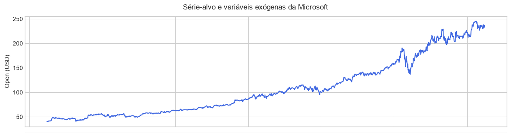
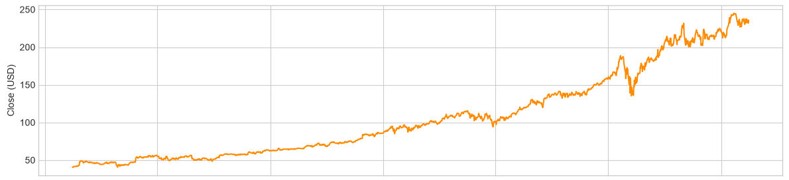
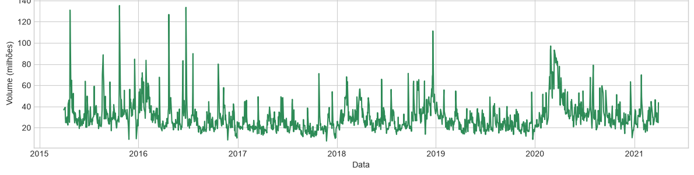
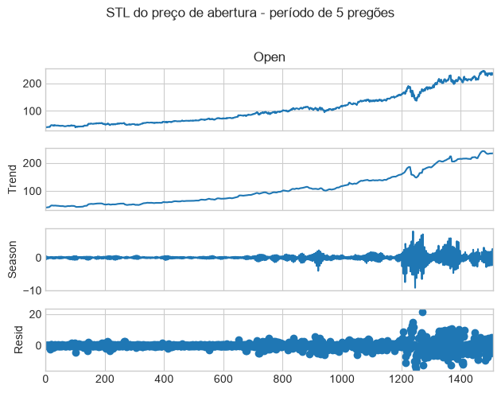
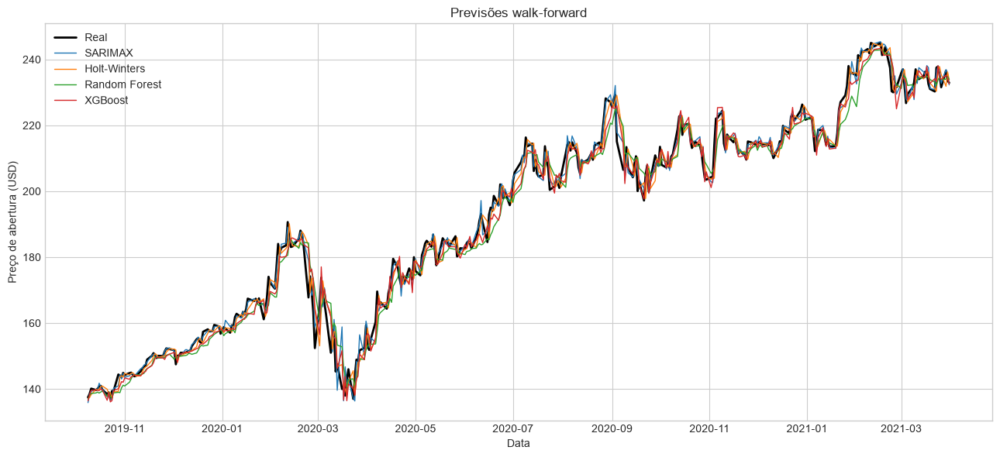
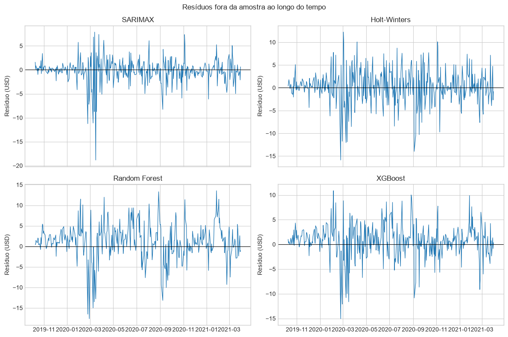
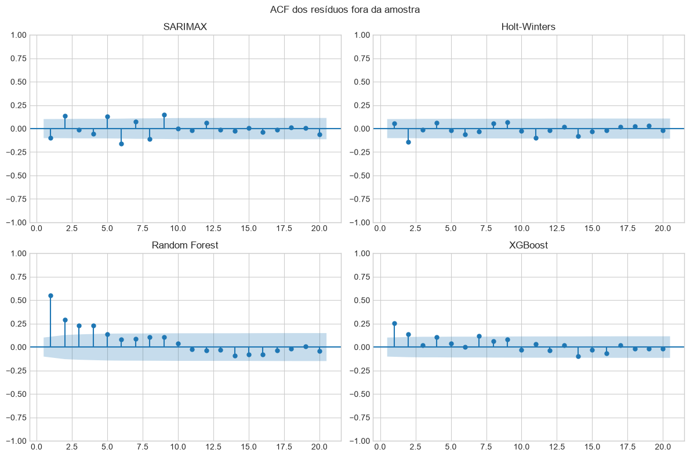
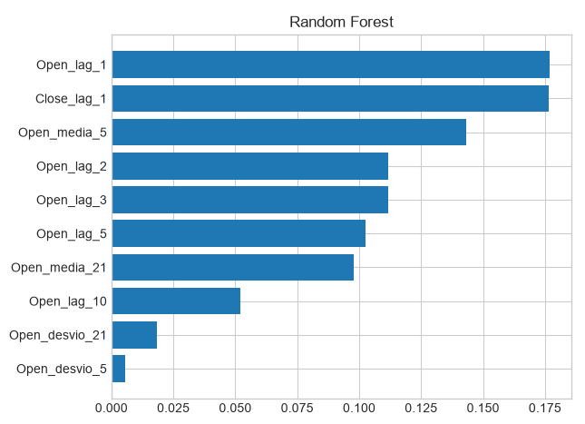
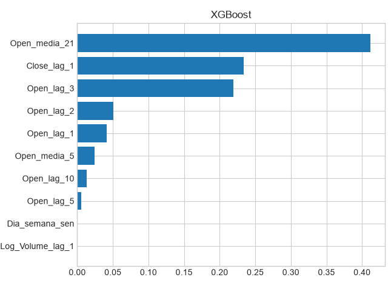

Microsoft Stock — preço de abertura
Fonte, período e características gerais da série-alvo
Ficha da base
| Fonte dos dados | Microsoft Stock Time Series Analysis — Kaggle |
|---|---|
| Variável-alvo | Open — preço de abertura da ação da Microsoft no pregão |
| Unidade | Dólares americanos (USD) |
| Frequência | Diária em dias de negociação (pregões) |
| Período coberto | 01/04/2015 a 31/03/2021 |
| Nº de observações | 1.511 observações |
| Horizonte de previsão definido | h = 1 pregão à frente |
| Justificativa da escolha da base | Série relevante, longa e com mudanças de tendência e volatilidade suficientes para comparar modelos estatísticos e de aprendizado de máquina. |
Gráfico da série-alvo

A abertura apresenta tendência predominante de alta, saindo da faixa de US$ 40 em 2015 e superando US$ 230 em 2021. Há correções e mudanças de volatilidade, com queda acentuada no início de 2020 e rápida recuperação posterior. Não se observa um ciclo semanal forte.
Variáveis externas
Dicionário de variáveis e disponibilidade real na data de previsão
Dicionário de variáveis
| Variável | Descrição | Unidade | Fonte |
|---|---|---|---|
Close | Fechamento da ação da Microsoft | USD | Base Microsoft Stock |
Volume | Quantidade de ações negociadas | Ações | Base Microsoft Stock |
Disponibilidade na data de origem da previsão
| Variável | Disponível no futuro? | Tratamento adotado |
|---|---|---|
| Dia da semana e mês | conhecida antecipadamente | Usar encoding cíclico de seno e cosseno |
Close e Volume |
indisponível — vazamento | Usar apenas o valor do pregão anterior (lag 1) |
Para prever a abertura no pregão
t, fechamento e volume entram com defasagem de um pregão. As médias e os desvios móveis também terminam em t-1. Essa regra impede que informações ainda desconhecidas na origem da previsão sejam usadas no modelo.Gráficos das variáveis externas


Limpeza e exploração
Qualidade dos dados antes da modelagem
Diagnóstico
| Valores ausentes | A base final possui 0 valores ausentes nas colunas utilizadas. |
|---|---|
| Duplicidades | 0 datas duplicadas após ordenação e deduplicação por data. |
| Irregularidades temporais | Os intervalos correspondem a fins de semana e feriados da bolsa. A unidade temporal foi mantida como pregão; não foram criados dias civis artificiais. |
| Valores atípicos (outliers) | O volume de 09/12/2019 aparece como 101.612 na fonte e foi corrigido para 16.687.400 somente na cópia de trabalho. Choques reais de preço e volatilidade foram preservados. |
Decisões de limpeza e transformação
O arquivo original não foi alterado. As datas foram convertidas, a base foi ordenada e deduplicada, e o erro conhecido de volume foi corrigido apenas em memória. O volume recebeu transformação
log1p antes da defasagem. Não houve interpolação nem winsorização dos preços, pois movimentos extremos podem representar eventos reais do mercado.Decomposição STL
Tendência, sazonalidade e resíduo

Tendência
A tendência estimada passa de aproximadamente US$ 40,64 para US$ 234,28. O movimento predominante é de alta, interrompido por correções — especialmente no início de 2020 — e seguido por recuperação.
Sazonalidade
Foi testado o período operacional de cinco pregões. A amplitude é pequena e instável; a força calculada é 0,000, portanto não há sazonalidade semanal relevante.
Resíduo
O resíduo concentra choques de mercado e períodos de maior volatilidade. Os picos ao redor de 2020 indicam movimentos que tendência e sazonalidade não explicam.
Força da sazonalidade / tendência
| Métrica | Valor | Interpretação |
|---|---|---|
| Força da tendência | 0,998 | Tendência muito forte |
| Força da sazonalidade | 0,000 | Ciclo semanal sem força relevante |
Feature engineering
Construção das features usadas nos modelos baseados em tabela
Features construídas
| Tipo | Descrição | Usada em quais modelos |
|---|---|---|
| Lags da variável-alvo | Open em 1, 2, 3, 5 e 10 pregões | Random Forest e XGBoost |
| Lags de variáveis externas | Close e log do Volume em t-1 | Random Forest, XGBoost e SARIMAX |
| Estatísticas de janela móvel | Média e desvio-padrão da abertura em janelas de 5 e 21 pregões, encerradas em t-1 | Random Forest e XGBoost |
| Features de calendário | Dia da semana e mês | Random Forest e XGBoost |
| Encoding cíclico | Seno e cosseno do dia da semana e do mês | Random Forest e XGBoost |
| Transformação adicional | Logaritmo do volume antes da defasagem | Random Forest, XGBoost e SARIMAX |
Tratamento de NA gerado pelos lags/janelas
As primeiras 21 linhas foram descartadas como período de aquecimento da maior janela móvel. Restaram 1.490 observações completas para modelagem, sem imputar valores gerados artificialmente.
Random Forest e XGBoost receberam exatamente as mesmas 15 features. Essa igualdade mantém a comparação justa entre o modelo de referência baseado em árvores e o modelo de especialização.
Protocolo walk-forward
Como a validação fora da amostra foi montada para esta base
| Janela inicial de treino | 1.118 observações, de 01/05/2015 a 08/10/2019 |
|---|---|
| Horizonte de previsão | h = 1 pregão |
| Passo de avanço | 1 pregão por iteração, com janela expansiva |
| Nº de origens de previsão (folds) | 372 origens fora da amostra |
| Datas de origem | Todos os pregões consecutivos do teste, de 09/10/2019 a 31/03/2021 |
| Conjunto de teste final | 25% finais da base preparada: 372 observações |
Confirmado: SARIMAX, Holt-Winters, Random Forest e XGBoost usam as mesmas 372 datas, o mesmo horizonte de um pregão e os valores reais entram no histórico somente após cada previsão.
Modelos e hiperparâmetros
Espaço de busca, procedimento e configuração final
SARIMAX
| Espaço de busca | (1,1,0), (0,1,1) e (1,1,1); parte sazonal (0,0,0,5) ou (1,0,0,5) |
|---|---|
| Critério | Menor AIC no treino; BIC registrado como diagnóstico |
| Variáveis externas incluídas | Close e log do Volume em t-1, padronizados apenas com o treino |
| Configuração final | SARIMAX(1,1,1)×(1,0,0)5; AIC 2.467,12 e BIC 2.497,20 |
Holt-Winters (referência univariada)
| Tendência | Aditiva e amortecida |
|---|---|
| Sazonalidade | Nenhuma na configuração vencedora |
| Período sazonal | 5 pregões foi avaliado na alternativa sazonal; não se aplica ao modelo final |
| Parâmetros de suavização | Estimados internamente por máxima verossimilhança em cada ajuste |
Random Forest
| Espaço de busca | n_estimators: 100/200; max_depth: 3/6; min_samples_split: 2/5; min_samples_leaf: 1/5; max_features: sqrt |
|---|---|
| Método de otimização | Busca em grade, TimeSeriesSplit com 4 divisões e menor MAE |
| Configuração final | n_estimators=200, max_depth=6, min_samples_split=2, min_samples_leaf=1, max_features=sqrt |
Modelo de especialização — XGBoost
| Principais hiperparâmetros | n_estimators, max_depth, learning_rate, subsample e colsample_bytree |
|---|---|
| Intervalos testados | Árvores: 100/200; profundidade: 3/5; taxa: 0,03/0,10; amostragem de linhas e colunas: 0,8 |
| Método de busca | Busca em grade, TimeSeriesSplit com 4 divisões e menor MAE |
| Configuração final | n_estimators=100, max_depth=3, learning_rate=0,10, subsample=0,8, colsample_bytree=0,8 |
Resultados comparativos (MAE)
Erro fora da amostra do protocolo walk-forward, apenas para esta base
| Modelo | MAE | Ranking |
|---|---|---|
| SARIMAX | 1,643 USD | 1º |
| XGBoost | 2,583 USD | 2º |
| Holt-Winters | 2,782 USD | 3º |
| Random Forest | 3,392 USD | 4º |

Com as exógenas corretas, o SARIMAX obteve o menor MAE, 1,643 USD. O XGBoost ficou em segundo lugar, com 2,583 USD. A vantagem do SARIMAX indica que a relação entre a abertura e o fechamento do pregão anterior é bem representada por sua estrutura dinâmica; o XGBoost continua competitivo ao combinar médias e lags recentes da abertura.
Análise dos resíduos
Erros fora da amostra, por modelo


| Modelo | Estatística Ljung-Box | p-valor | Interpretação |
|---|---|---|---|
| SARIMAX | 47,661 | 0,000474 | Autocorrelação residual |
| Holt-Winters | 23,309 | 0,2739 | Sem evidência de autocorrelação a 5% |
| Random Forest | 217,360 | 4,01 × 10−35 | Autocorrelação residual |
| XGBoost | 53,295 | 0,0000735 | Autocorrelação residual |
O SARIMAX apresenta leve superestimação média de 0,178 USD (resíduo médio −0,178). Os demais subestimam em média: 0,295 no Holt-Winters, 1,288 no Random Forest e 0,778 no XGBoost. Apenas o Holt-Winters não apresenta evidência de autocorrelação residual a 5%; SARIMAX, Random Forest e XGBoost ainda deixam estrutura temporal nos erros.
Importância das features
Random Forest, XGBoost e coeficientes do SARIMAX


SARIMAX — coeficientes das variáveis externas
| Variável | Coeficiente | Sinal | Significância |
|---|---|---|---|
| Fechamento em t−1 (padronizado) | 28,599 | Positivo | Significativo (p < 0,001) |
| Log do volume em t−1 (padronizado) | 0,047 | Positivo | Significativo (p = 0,029) |
No XGBoost, as três maiores importâncias são a média móvel de 21 pregões (41,2%), o fechamento em t−1 (23,4%) e a abertura em t−3 (22,0%). O log do volume tem importância nativa muito pequena no XGBoost, mas coeficiente significativo no SARIMAX. As exógenas entram apenas em t−1 para evitar vazamento; importância e significância não implicam causalidade.
Conclusão desta base
O SARIMAX foi o melhor modelo desta base, com MAE de 1,643 USD. O XGBoost, modelo de especialização do grupo, ficou em segundo lugar com 2,583 USD. O resultado reforça a relevância do fechamento do pregão anterior para prever a abertura seguinte. A sazonalidade semanal é desprezível, e o Holt-Winters vencedor não utilizou componente sazonal. As principais limitações são mudanças de regime, horizonte de apenas um pregão e autocorrelação residual em três modelos, inclusive SARIMAX e XGBoost. Recomenda-se reestimar os modelos periodicamente e monitorar MAE, viés e Ljung-Box.
Responsabilidade: Gabriel Bento realizou a análise da base Microsoft e a especialização em XGBoost. A comparação consolidada entre as cinco bases permanece no relatório coletivo do grupo. O notebook
main.ipynb e os arquivos da pasta resultados preservam os dados, configurações, previsões, métricas, resíduos, importâncias e coeficientes utilizados neste relatório.